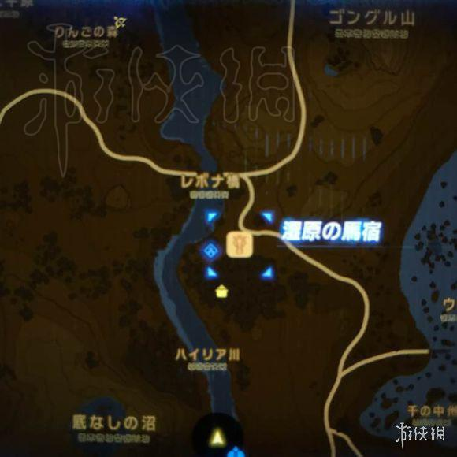
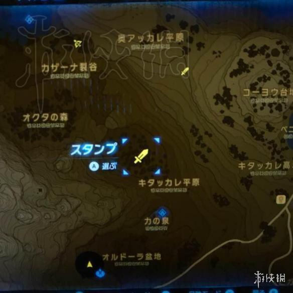
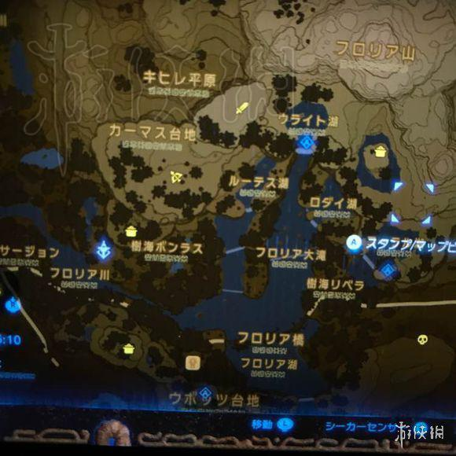
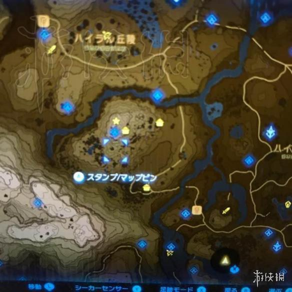

有小伙伴不清楚塞尔达传说荒野之息游戏中的黄心料理怎么制作，今天小编就为大家带来玩家“芝麻朵”分享的此款料理的制作方法，有需要的朋友们快来看看吧！
黄心料理制作方法分享
大小萝卜、松茸以及榴莲，还有某种鱼。不过鱼太难抓了就用植物吧。
些植物+1个苹果/1个椰子/一个小块的肉扔锅里就是加黄心的料理了。。。如果还是不行你就再射几个龙甲什么的扔进去吧。。。
萝卜在这个马厩旁边的树林有好多。

松茸在这个人马这里，把人马杀了再去找松茸。

这仨锅盖旁边应该是榴莲。

这个星星旁边的是榴莲，好几棵树，右边的是一个台子上萝卜榴莲松茸都有。下面那个路边上锅应该是有几个萝卜。
